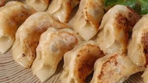

Ingredienti
- 200g di macinato di maiale
- 1 cipollotto
- 1 cucchiaio di salsa di soia
- 1 cucchiaino di zenzero grattugiato
- Impasto per ravioli (o sfoglia pronta)
- Olio e acqua per la cottura
Preparazione
- Mescola carne, cipollotto, soia e zenzero.
- Riempi ogni dischetto con un cucchiaino di ripieno.
- Chiudi a mezzaluna sigillando i bordi.
- Rosola i ravioli in padella, aggiungi acqua e copri.
- Cuoci al vapore finché l'acqua evapora e servi.
Tempo di preparazione: 20-30 minuti
Difficoltà: Media